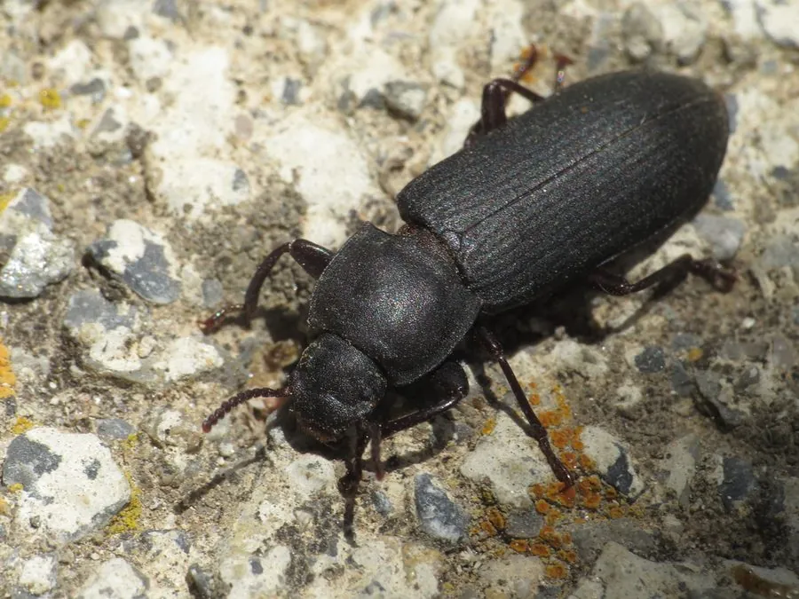

昆虫 · 动物界
黄粉虫甲 Tenebrio obscurus

常见的储粮害虫，幼虫俗称“面包虫”，蛋白质含量高，被大量人工养殖用作宠物饲料和昆虫食品原料。
- 分类
- 门节肢动物门纲昆虫纲目鞘翅目科拟步甲科属粉甲属
- 栖息环境
- 粮仓、面粉厂、养殖场和腐殖质丰富的场所
- 地理分布
- 全球广泛分布，中国各地均有
- 保护级别
- 暂无评估
物种志
黄粉虫甲成虫体长 14–18 mm，体色黑褐或暗褐色，身体略扁平，触角短，鞘翅上有细纵纹。幼虫体呈圆柱形，黄褐色，有环纹和坚硬的外皮，也就是人们熟悉的“面包虫”。
黄粉虫甲全球分布，常见于粮仓、面粉厂和养殖场。成虫和幼虫都取食谷物、面粉和麸皮，是储粮害虫。它的幼虫蛋白质含量很高，干物质中可达 50% 左右，因此被广泛人工养殖，用作鸟类、爬行动物和鱼类的活饵，也被视为未来昆虫蛋白和昆虫食品的重要来源。在温暖条件下，黄粉虫一年可以完成多代，人工养殖技术已经相当成熟，是循环农业中把有机废弃物转化为优质蛋白的典型物种。目前它没有IUCN 的正式评估，中国未将其列入国家重点保护野生动物名录。
形态与习性
- 食性成虫和幼虫都取食谷物、面粉和麸皮
- 体长成虫 14–18 mm
- 幼虫俗称“面包虫”，体呈圆柱形、黄褐色
- 蛋白质含量幼虫干物质中蛋白质约占 50%
- 生活史温暖条件下一年可完成多代
- 用途宠物活饵、昆虫蛋白和昆虫食品原料
趣味知识
- 黄粉虫的幼虫就是常见的“面包虫”，是宠物市场中销量很大的活饵。
- 它的干物质中蛋白质含量可达 50% 左右，被视为未来昆虫蛋白的来源。
- 黄粉虫是粮仓里的害虫，却也是循环农业中的“宝贝”。